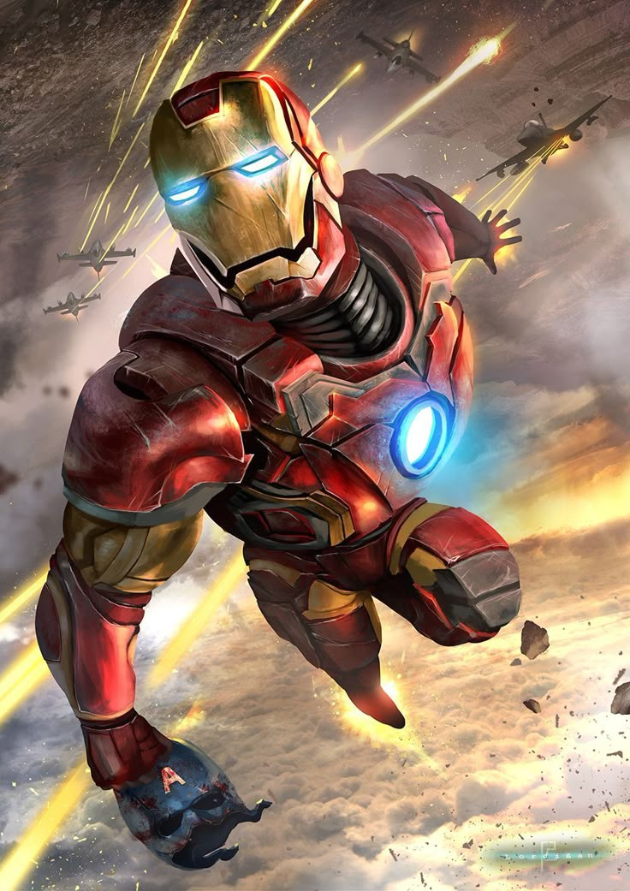

O Universo de Tony Stark & Iron Man
Explore a trajetória completa do gênio, bilionário e filantropo que deu origem ao Universo Cinematográfico da Marvel. Conheça cada armadura, tecnologia, aliado, inimigo e teste seus conhecimentos no quiz interativo.
Sobre este site
Este portal foi desenvolvido exclusivamente para fins acadêmicos, com o objetivo de aplicar na prática conhecimentos de desenvolvimento web, estruturação semântica e design responsivo.
O universo do Homem de Ferro (Tony Stark) foi escolhido como tema central por unir tecnologia, inovação e cultura pop, permitindo explorar diferentes formatos de conteúdo.

Explore Todas as Seções do Portal
Selecione uma das categorias abaixo para acessar diretamente o conteúdo completo.
Tony Stark
Conheça a história, personalidade, legado nas Indústrias Stark e evolução pessoal do herói.
Hall das Armaduras
Da Mark I forjada na caverna até a nanotecnologia da Mark LXXXV e a armadura Hulkbuster.
Tecnologias Stark
Detalhes sobre o Reator Arc, inteligências artificiais J.A.R.V.I.S. e F.R.I.D.A.Y. e propulsão repulsora.
Inimigos & Vilões
Os principais adversários enfrentados pelo Homem de Ferro: Monge de Ferro, Chicote Negro, Ultron e Thanos.
Filmes & Aparições
Trilogia solo e todas as participações marcantes nas produções dos Vingadores e do MCU.
Galeria Visual
Pôsteres oficiais, cenas icônicas das batalhas e artes conceituais das armaduras.
Linha do Tempo
Os eventos cronológicos mais importantes desde 2008 até a batalha final em 2023.
Quiz Iron Man
Teste seus conhecimentos sobre armaduras, citações e momentos históricos de Tony Stark.
Sobre o Projeto
Detalhes acadêmicos, estruturação semântica, tecnologias aplicadas e equipe de desenvolvimento.